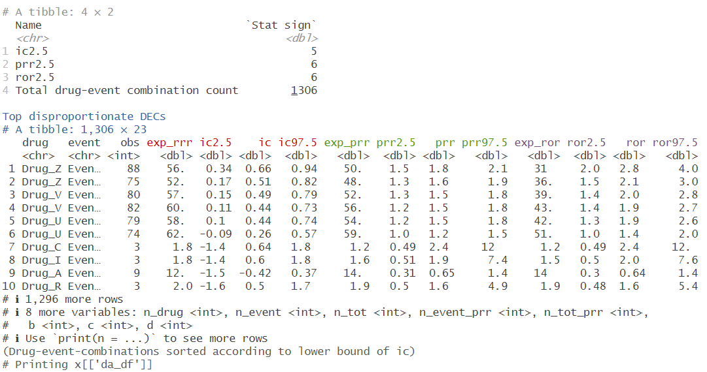

Disproportionality analysis
Source:vignettes/Disproportionality_analysis.Rmd
Disproportionality_analysis.RmdIntroduction
During the life cycle of a medicinal product, knowledge of the safety profile continues to accumulate post market introduction. Adverse event reports collected through spontaneous reporting play an instrumental part in this development.
Adverse event report databases often cover a wide range of drugs and events, beyond what can be feasibly monitored through manual work. Disproportionality analysis is thus often used to highlight drug-event-combinations of potential interest for further qualitative manual case-by-case assessment.
The pvda package provides three disproportionality
estimators: the proportional reporting rate (PRR), the reporting odds
ratio (ROR) and the information component (IC). It takes report level
data as input, and outputs estimates for each drug-event-combination,
possibly stratified by some variable of interest, e.g. age group and/or
sex.
Executing a disproportionality analysis
The workhorse of this package is the function da. The
da-function takes patient level data in a data frame as
input (here drug_event_df) and produces estimates and
summary counts as demonstrated below.
da_1 <-
drug_event_df |>
da()The drug_event_df is a simulated data set with drugs
named Drug_A - Drug_Z and events Event_1 - Event_1000. Further details
about the simulation are documented in the data object (execute
?df_drug_event).
Specifying the column names
The da-function will examine the passed data set for column names contained in the passed parameter list “df_colnames”. The default column names are “report_id”, “drug” and “event”. If we rename the report-id column in “drug_event_df” we need to specify the new name in the call to da, as shown below:
Summarizing and printing results
The ‘da_1’ object can then be passed to a summary and a print function.
summary(da_1)## Warning: `...` must be empty in `format.tbl()`
## Caused by error in `format_tbl()`:
## ! `...` must be empty.
## ✖ Problematic argument:
## • row.names = !group_is_null
print(da_1, n=3)
(Technical note: As printing of colors in the console is not easily reproduced within this vignette , we provide screenshots when applicable. )
Passing correctly structured input data
The input data needs to be in a report-level format. every line in the data frame corresponds to a drug-event pair from a specific report.
In the drug_event_df-example data, the first three rows of drug_event_df are from the same report, with report_id = 1. The first row reports a Drug_D and an adverse event named Event_5.The next three rows are from another report, where for instance drug B has been reported for two different events, event 15 and event 33. We can ignore the group-column for now.
drug_event_df[1:6, ]## # A tibble: 6 × 4
## report_id drug event group
## <int> <chr> <chr> <dbl>
## 1 1 Drug_A Event_23 1
## 2 1 Drug_D Event_6 1
## 3 1 Drug_E Event_8 1
## 4 1 Drug_I Event_9 1
## 5 2 Drug_B Event_2 0
## 6 2 Drug_G Event_13 0Extracting the results
For covenience, the output object of da is a list of class “da” containing two objects, the results (“da_df”) and the input parameters (“input_params”). At some point you might want to extract the results or the input parameters list, here we demonstrate some alternatives:
names(da_1)## [1] "da_df" "input_params"
# Different ways of extracting the results data frame
# da_1$da_df
# da_1[['da_df']]
# da_1 |> purrr::pluck("da_df")How to run a subgroup analysis?
The da function builds a comparator from the passed
data, e.g. for prr by excluding the drug of interest from
the comparator, sometimes referred to as the background. This implies
that any subgroup analysis of e.g. specific age groups can be achieved
by creating a new data frame with the subgroup of interest, and then
passing it to da.
If a more exhaustive grouping is required, one can provide a grouping
variable group_by to da. This executes a call
to da for each grouping and return the results as a single
data frame. The grouping could for instance be age groups, sex,
countries, regions or a combination thereof, but needs to be passed as a
single variable (character or numeric).
The drug_event_df contains two groups, in the column named “group”.
We can pass “group” as the group_by parameter in
df_colnames as below.
drug_event_df |>
head()## # A tibble: 6 × 4
## report_id drug event group
## <int> <chr> <chr> <dbl>
## 1 1 Drug_A Event_23 1
## 2 1 Drug_D Event_6 1
## 3 1 Drug_E Event_8 1
## 4 1 Drug_I Event_9 1
## 5 2 Drug_B Event_2 0
## 6 2 Drug_G Event_13 0## # A tibble: 1,808 × 24
## drug event group obs exp_rrr ic2.5 ic ic97.5 exp_prr prr2.5 prr
## <chr> <chr> <dbl> <int> <dbl> <dbl> <dbl> <dbl> <dbl> <dbl> <dbl>
## 1 Drug_Z Event_1 0 45 26.5 0.3 0.75 1.14 23.4 1.54 1.92
## 2 Drug_Z Event_1 1 43 29.1 0.09 0.56 0.96 26.5 1.28 1.63
## 3 Drug_Z Event_2 0 33 24.6 -0.12 0.42 0.87 23.2 1.07 1.42
## 4 Drug_Z Event_2 1 42 27.8 0.12 0.59 0.99 25.1 1.3 1.67
## 5 Drug_V Event_2 0 34 26.0 -0.14 0.38 0.82 24.6 1.04 1.38
## 6 Drug_V Event_2 1 46 31.0 0.12 0.56 0.95 27.8 1.3 1.66
## 7 Drug_V Event_1 0 40 28.0 0.03 0.51 0.92 25.8 1.21 1.55
## 8 Drug_V Event_1 1 42 32.4 -0.1 0.37 0.77 30.3 1.07 1.38
## 9 Drug_U Event_2 0 42 31.5 -0.06 0.41 0.81 29.1 1.11 1.44
## 10 Drug_U Event_2 1 37 26.8 -0.04 0.46 0.89 24.9 1.14 1.49
## # ℹ 1,798 more rows
## # ℹ 13 more variables: prr97.5 <dbl>, exp_ror <dbl>, ror2.5 <dbl>, ror <dbl>,
## # ror97.5 <dbl>, n_drug <int>, n_event <int>, n_tot <int>, n_event_prr <int>,
## # n_tot_prr <int>, b <int>, c <int>, d <int>In the output we note the third column is “group”, i.e. the column
name we passed. We also note that the drug-event-pairs are kept
together, e.g. first and second row contains the same
drug-event-combination, “Drug_Z” and “Event_1”. This is to simplify
comparisons within a drug-event-pair across different groups, e.g. if
the same pattern is seen across both males and females. The ordering of
the drug-events in the output is made by averaging the selected
disproportionality estimate (parameter sort_by), i.e. the
top two rows have the highest average “ic2.5”.
Frequently Asked Questions
How are drug-event pairs occurring several times in one report counted?
If the same drug-event pair occurs several times in one report, these contributes to counts only once. That is, an observed count of five means that there were five different reports containing the drug-event-pair (at least once). It cannot be due to a single report containing the same drug-event pair five times due to repeated events or data quality issues. This is demonstrated below, where we duplicate the first row of drug_event_df and still arrive at an observed count of 1.
first_row <- drug_event_df[1,]
first_row |>
dplyr::bind_rows(first_row) |>
da() |>
purrr::pluck("da_df") |>
dplyr::pull(obs)## [1] 1How is the expected calculated?
Detailed formulas for PRR, RRR and IC are documented within each function ( “?prr”, “?rrr”, “?ic”), but overall one can note that all expected counts are derived from the same contingency table of those who were and were not exposed to the drug, and did and did not experience the adverse event. The sample used for the contingency table is the data frame passed to the da function. See also the grouping parameter.
Where is exp_ic in the output, or what is exp_prr?
A common question regards the output column names, ic is preceded by “exp_prr”. This is as the information component uses the same expected count as the Relative Reporting Rate (RRR), which is perhaps more well known in the pharmacovigilance community.
# Note the fourth column name:
drug_event_df |>
da() |>
purrr::pluck("da_df") |>
dplyr::select(drug:ic97.5) |>
print(n=1)## # A tibble: 1,306 × 7
## drug event obs exp_rrr ic2.5 ic ic97.5
## <chr> <chr> <int> <dbl> <dbl> <dbl> <dbl>
## 1 Drug_Z Event_1 88 55.6 0.34 0.66 0.94
## # ℹ 1,305 more rowsRule of N
The function da has several input parameters. One is the
rule_of_N, by default set to 3, which is sometimes referred
to as “rule of three”. This sets ROR and PRR-values to NA if the
observed count is less than the specified N. For completeness, note that
the default shrinkage in the IC acts as a built in ‘rule of 3’,
(i.e. the shrinkage of +0.5 prevents the lower bound to exceed 0 at the
default significance level of 95%).
Controlling the number of digits
The function da has a parameter
number_of_digits controls the rounding of non-count values
in the output, including all expected counts, uncertainty bounds and
point estimates.

Can I use pvda to get IC, PRR or ROR, when I already have the observed and expected counts?
Yes, you can calculate point estimates with confidence or credibility intervals for specific drug-event-combination if you already have the number of observed reports, and other required counts such as the database total count, number of reports with the exposure and number of reports with the event. This can be helpful for instance to quality check results, e.g. from papers or other software.
prr(obs = 10, n_drug = 1000, n_event_prr = 200, n_tot_prr = 10000)## # A tibble: 1 × 3
## prr2.5 prr prr97.5
## <dbl> <dbl> <dbl>
## 1 0.266 0.5 0.940
ror(a = 10, b = 20, c = 200, d = 10000)## # A tibble: 1 × 3
## ror2.5 ror ror97.5
## <dbl> <dbl> <dbl>
## 1 11.6 25 54.1
ic(obs = 10, exp = 5)## # A tibble: 1 × 3
## ic2.5 ic ic97.5
## <dbl> <dbl> <dbl>
## 1 -0.0973 0.933 1.69For further details on the specific input parameters, consult the documentation of each function.
How fast is pvda?
The data.table-package (through “dtplyr”) is used for fast execution.
A test of the execution speed was made using the vaers R
package, available on gitlab. The
vaers package contains data from VAERS from years 1990 -
2018, resulting in 4 146 778 rows to be processed by da in
pvda. Execution time on a regular laptop was less than 10
seconds.